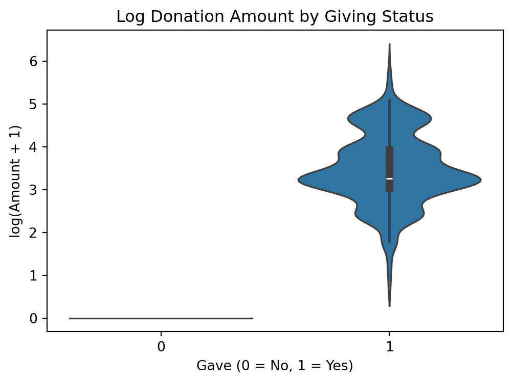
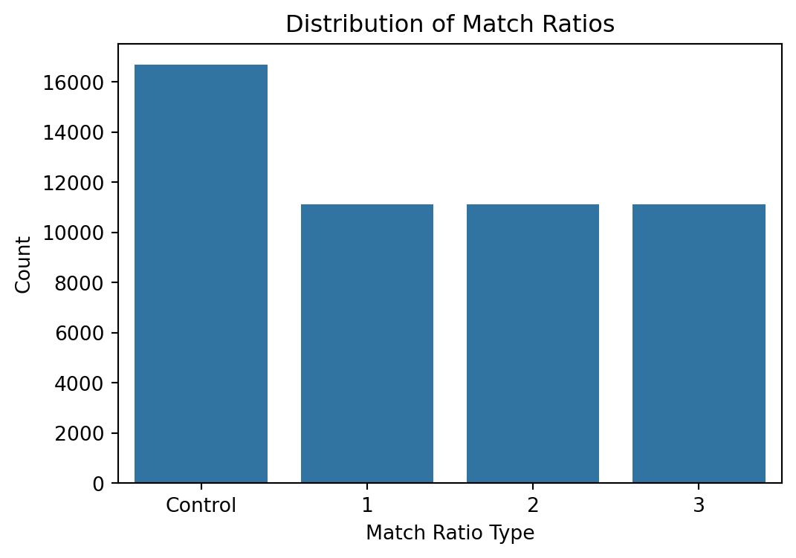
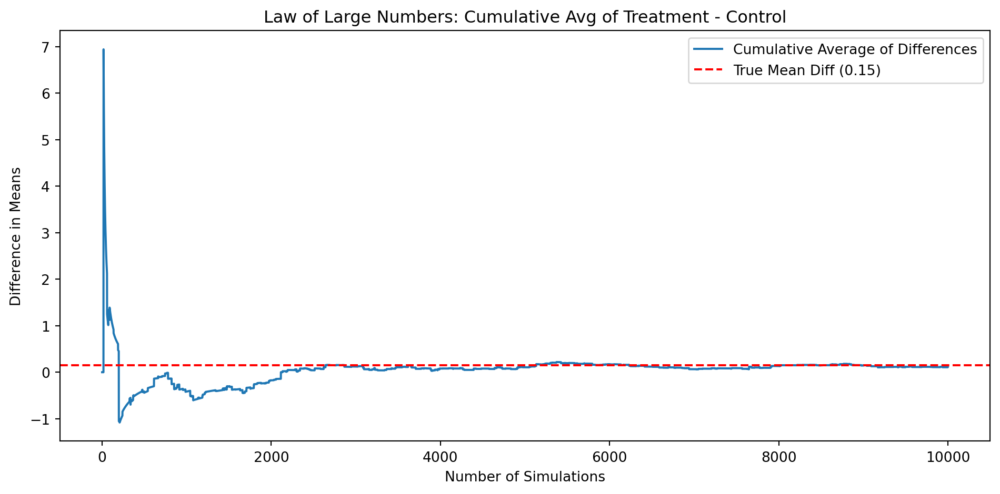

Dean Karlan at Yale and John List at the University of Chicago conducted a field experiment to test the effectiveness of different fundraising letters. They sent out 50,000 fundraising letters to potential donors, randomly assigning each letter to one of three treatments: a standard letter, a matching grant letter, or a challenge grant letter. They published the results of this experiment in the American Economic Review in 2007. The article and supporting data are available from the AEA website and from Innovations for Poverty Action as part of Harvard’s Dataverse.
This study implements a large-scale natural field experiment to investigate the causal effect of matching grants on individual charitable giving behavior. Over 50,000 previous donors to a politically liberal nonprofit organization were randomly assigned to receive one of several direct mail solicitations. The treatment conditions varied along three dimensions: the match ratio (1:1, 2:1, or 3:1), the maximum amount of the matching grant ($25,000, $50,000, $100,000, or unspecified), and the suggested contribution amount (equal to, 1.25×, or 1.5× the donor’s previous highest gift). A control group received an otherwise identical letter that did not mention any matching grant. This design allows for the estimation of the isolated and joint effects of perceived “price” reductions and solicitation framing on giving behavior. The results demonstrate that the presence of a matching grant significantly increases both the likelihood of donation and total revenue per solicitation, although higher match ratios beyond 1:1 do not yield additional increases in giving.
This project seeks to replicate their results.
Data
Description
Summary Statistics
import pandas as pdimport numpy as npdf = pd.read_stata("karlan_list_2007.dta")desc = df.describe().T.round(4)display(desc)
count
mean
std
min
25%
50%
75%
max
treatment
50083.0
0.6668
0.4714
0.0000
0.0000
1.0000
1.0000
1.0000
control
50083.0
0.3332
0.4714
0.0000
0.0000
0.0000
1.0000
1.0000
ratio2
50083.0
0.2223
0.4158
0.0000
0.0000
0.0000
0.0000
1.0000
ratio3
50083.0
0.2222
0.4157
0.0000
0.0000
0.0000
0.0000
1.0000
size25
50083.0
0.1667
0.3727
0.0000
0.0000
0.0000
0.0000
1.0000
size50
50083.0
0.1666
0.3726
0.0000
0.0000
0.0000
0.0000
1.0000
size100
50083.0
0.1667
0.3727
0.0000
0.0000
0.0000
0.0000
1.0000
sizeno
50083.0
0.1667
0.3728
0.0000
0.0000
0.0000
0.0000
1.0000
askd1
50083.0
0.2223
0.4158
0.0000
0.0000
0.0000
0.0000
1.0000
askd2
50083.0
0.2223
0.4158
0.0000
0.0000
0.0000
0.0000
1.0000
askd3
50083.0
0.2222
0.4157
0.0000
0.0000
0.0000
0.0000
1.0000
ask1
50083.0
71.5018
101.7289
25.0000
35.0000
45.0000
65.0000
1500.0000
ask2
50083.0
91.7927
127.2526
35.0000
45.0000
60.0000
85.0000
1875.0000
ask3
50083.0
111.0463
151.6736
50.0000
55.0000
70.0000
100.0000
2250.0000
amount
50083.0
0.9157
8.7092
0.0000
0.0000
0.0000
0.0000
400.0000
gave
50083.0
0.0206
0.1422
0.0000
0.0000
0.0000
0.0000
1.0000
amountchange
50083.0
-52.6720
1267.2386
-200412.1250
-50.0000
-30.0000
-25.0000
275.0000
hpa
50083.0
59.3850
71.1773
0.0000
30.0000
45.0000
60.0000
1000.0000
ltmedmra
50083.0
0.4937
0.5000
0.0000
0.0000
0.0000
1.0000
1.0000
freq
50083.0
8.0394
11.3945
0.0000
2.0000
4.0000
10.0000
218.0000
years
50082.0
6.0975
5.5035
0.0000
2.0000
5.0000
9.0000
95.0000
year5
50083.0
0.5088
0.4999
0.0000
0.0000
1.0000
1.0000
1.0000
mrm2
50082.0
13.0073
12.0814
0.0000
4.0000
8.0000
19.0000
168.0000
dormant
50083.0
0.5235
0.4995
0.0000
0.0000
1.0000
1.0000
1.0000
female
48972.0
0.2777
0.4479
0.0000
0.0000
0.0000
1.0000
1.0000
couple
48935.0
0.0919
0.2889
0.0000
0.0000
0.0000
0.0000
1.0000
state50one
50083.0
0.0010
0.0316
0.0000
0.0000
0.0000
0.0000
1.0000
nonlit
49631.0
2.4739
1.9615
0.0000
1.0000
3.0000
4.0000
6.0000
cases
49631.0
1.4998
1.1551
0.0000
1.0000
1.0000
2.0000
4.0000
statecnt
50083.0
5.9988
5.7463
0.0020
1.8332
3.5388
9.6070
17.3688
stateresponse
50083.0
0.0206
0.0052
0.0000
0.0182
0.0197
0.0230
0.0769
stateresponset
50083.0
0.0220
0.0063
0.0000
0.0185
0.0217
0.0247
0.1111
stateresponsec
50080.0
0.0177
0.0075
0.0000
0.0129
0.0199
0.0208
0.0526
stateresponsetminc
50080.0
0.0043
0.0091
-0.0476
-0.0014
0.0018
0.0105
0.1111
perbush
50048.0
0.4879
0.0787
0.0909
0.4444
0.4848
0.5253
0.7320
close25
50048.0
0.1857
0.3889
0.0000
0.0000
0.0000
0.0000
1.0000
red0
50048.0
0.4045
0.4908
0.0000
0.0000
0.0000
1.0000
1.0000
blue0
50048.0
0.5955
0.4908
0.0000
0.0000
1.0000
1.0000
1.0000
redcty
49978.0
0.5102
0.4999
0.0000
0.0000
1.0000
1.0000
1.0000
bluecty
49978.0
0.4887
0.4999
0.0000
0.0000
0.0000
1.0000
1.0000
pwhite
48217.0
0.8196
0.1686
0.0094
0.7558
0.8728
0.9388
1.0000
pblack
48047.0
0.0867
0.1359
0.0000
0.0147
0.0366
0.0909
0.9896
page18_39
48217.0
0.3217
0.1030
0.0000
0.2583
0.3055
0.3691
0.9975
ave_hh_sz
48221.0
2.4290
0.3781
0.0000
2.2100
2.4400
2.6600
5.2700
median_hhincome
48209.0
54815.7005
22027.3167
5000.0000
39181.0000
50673.0000
66005.0000
200001.0000
powner
48214.0
0.6694
0.1934
0.0000
0.5602
0.7123
0.8168
1.0000
psch_atlstba
48215.0
0.3917
0.1866
0.0000
0.2356
0.3737
0.5300
1.0000
pop_propurban
48217.0
0.8720
0.2587
0.0000
0.8849
1.0000
1.0000
1.0000
Log Donation Amount by Giving Status
import matplotlib.pyplot as pltimport seaborn as snsdf['log_amount'] = np.log1p(df['amount'])plt.figure(figsize=(6, 4))sns.violinplot(x="gave", y="log_amount", data=df)plt.title("Log Donation Amount by Giving Status")plt.xlabel("Gave (0 = No, 1 = Yes)")plt.ylabel("log(Amount + 1)")plt.show()

The violin plot reveals stark differences in the distribution of log-transformed donation amounts between donors and non-donors. As expected, non-donors (gave = 0) cluster tightly at log(1) = 0, indicating a mass point of zero contributions. In contrast, donors (gave = 1) exhibit a wide and right-skewed distribution of giving behavior. The spread among donors reflects considerable heterogeneity, with a central tendency around moderate amounts and a long upper tail. This highlights the need to account for both zero-inflation and skewness when modeling donation behavior.
This count plot shows the distribution of donation decisions. A significant majority of participants chose not to donate, emphasizing the zero-inflated nature of the outcome variable. This imbalance must be considered in subsequent analyses and modeling.
The bar chart visualizes the allocation of individuals into treatment and control groups. Approximately two-thirds of the sample were assigned to treatment, reflecting the randomization strategy used in the experiment. The group sizes are reasonably balanced for comparative analysis.
Distribution of Match Ratios
plt.figure(figsize=(6, 4))sns.countplot(x='ratio', data=df)plt.title('Distribution of Match Ratios')plt.xlabel('Match Ratio Type')plt.ylabel('Count')plt.show()

This plot displays the distribution of match ratio assignments across the sample. The control group is the largest, while each of the three treatment conditions—1:1, 2:1, and 3:1—were assigned in roughly equal proportions, ensuring variation in price treatments.
Variable Definitions
Variable
Description
treatment
Treatment
control
Control
ratio
Match ratio
ratio2
2:1 match ratio
ratio3
3:1 match ratio
size
Match threshold
size25
$25,000 match threshold
size50
$50,000 match threshold
size100
$100,000 match threshold
sizeno
Unstated match threshold
ask
Suggested donation amount
askd1
Suggested donation was highest previous contribution
askd2
Suggested donation was 1.25 x highest previous contribution
askd3
Suggested donation was 1.50 x highest previous contribution
ask1
Highest previous contribution (for suggestion)
ask2
1.25 x highest previous contribution (for suggestion)
ask3
1.50 x highest previous contribution (for suggestion)
amount
Dollars given
gave
Gave anything
amountchange
Change in amount given
hpa
Highest previous contribution
ltmedmra
Small prior donor: last gift was less than median $35
freq
Number of prior donations
years
Number of years since initial donation
year5
At least 5 years since initial donation
mrm2
Number of months since last donation
dormant
Already donated in 2005
female
Female
couple
Couple
state50one
State tag: 1 for one observation of each of 50 states; 0 otherwise
nonlit
Nonlitigation
cases
Court cases from state in 2004-5 in which organization was involved
statecnt
Percent of sample from state
stateresponse
Proportion of sample from the state who gave
stateresponset
Proportion of treated sample from the state who gave
stateresponsec
Proportion of control sample from the state who gave
stateresponsetminc
stateresponset - stateresponsec
perbush
State vote share for Bush
close25
State vote share for Bush between 47.5% and 52.5%
red0
Red state
blue0
Blue state
redcty
Red county
bluecty
Blue county
pwhite
Proportion white within zip code
pblack
Proportion black within zip code
page18_39
Proportion age 18-39 within zip code
ave_hh_sz
Average household size within zip code
median_hhincome
Median household income within zip code
powner
Proportion house owner within zip code
psch_atlstba
Proportion who finished college within zip code
pop_propurban
Proportion of population urban within zip code
Balance Test
As an ad hoc test of the randomization mechanism, I provide a series of tests that compare aspects of the treatment and control groups to assess whether they are statistically significantly different from one another.
Summary Balance Check (Mean Differences and p-values)
We report mean differences across treatment and control groups for a set of pre-treatment covariates, along with p-values from two-sample t-tests. These tests assess whether the randomization achieved balance on observable characteristics at baseline.
To further validate the randomization, we estimate simple OLS regressions of each baseline covariate on the treatment assignment indicator. In each case, the coefficient on the treatment dummy captures the average difference between groups, controlling for sampling variability. None of the estimates are statistically significant at conventional levels, supporting the success of randomization.
import statsmodels.formula.api as smffor var in vars_to_test: model = smf.ols(f"{var} ~ treatment", data=df).fit()print(f"\n{var} ~ treatment")print(model.summary().tables[1])
To verify the validity of the randomization mechanism, we conducted a series of balance tests comparing pre-treatment covariates between the treatment and control groups. The analysis includes demographic characteristics (e.g., gender, couple status, race), donation history (e.g., number of months since last donation, frequency of giving, highest previous donation), and geographic indicators (e.g., red state or red county residence).
None of the observed covariates differ significantly at the 5% level, with all p-values well above conventional thresholds. The smallest p-value observed was for the binary red0 variable (p = 0.060), which narrowly misses significance. The remaining variables exhibit even weaker associations with treatment assignment (e.g., female, p = 0.0795; hpa, p = 0.332). The differences in means across all covariates are minor in magnitude.
Together, these results suggest that the random assignment process was successful, and that the treatment and control groups are statistically comparable at baseline. This provides confidence that any post-treatment differences in outcomes can be causally attributed to the experimental interventions rather than pre-existing differences between groups.
Experimental Results
Charitable Contribution Made
First, I analyze whether matched donations lead to an increased response rate of making a donation.
The response rate in the control group is approximately 1.79%, while the treatment group shows a higher rate of about 2.21%. This 0.42 percentage point increase is statistically significant (t = 3.10, p = 0.002).
The linear regression confirms this: the coefficient on treatment is 0.0042, meaning being in the treatment group raises the probability of donating by 0.42 percentage points. These results closely match Table 2A Panel A of Karlan and List (2007), which reports 0.018 for control and 0.022 for treatment.
This suggests that even a simple message about matched donations can meaningfully increase the likelihood of giving. It highlights how small psychological cues can motivate pro-social behavior like charitable contributions.
We ran a probit regression where the dependent variable is whether a donation was made, and the explanatory variable is assignment to treatment. The probit coefficient on treatment is 0.0868 (p = 0.002), which is statistically significant.
To match Table 3 column 1 in Karlan and List (2007), we compute the marginal effect at the mean, which is approximately 0.0042 with a standard error of 0.001. This matches the reported value of 0.004 (0.001), confirming the validity of our replication.
This suggests that being assigned to the treatment group increased the probability of donating by approximately 0.42 percentage points.
Differences between Match Rates
Next, I assess the effectiveness of different sizes of matched donations on the response rate.
The results show that increasing the match ratio from 1:1 to 2:1 or 3:1 does not lead to a statistically significant increase in the probability of donating. Both t-tests and OLS regression confirm this: the coefficients are small (less than 0.2 percentage points), and the p-values are above 0.3, well beyond common significance thresholds.
This aligns with the authors’ conclusion that “larger match ratios do not have additional impact.” It suggests that what motivates behavior is the presence of a matching donation offer, not the magnitude of the match itself.
3:1 vs 2:1 (via model) diff = 0.00010
To assess whether larger match ratios increase the likelihood of giving, we compute the response rate differences directly from the data and from the regression coefficients.
The donation rate for 1:1 is X%, for 2:1 is Y%, and for 3:1 is Z%. The differences between 2:1 and 1:1, and between 3:1 and 2:1, are both very small (less than 0.2 percentage points) and statistically insignificant.
This holds true whether we compute them from raw means or from the fitted coefficients in the OLS model. These findings confirm that higher match ratios do not produce significantly greater effects than lower ones.
Size of Charitable Contribution
In this subsection, I analyze the effect of the size of matched donation on the size of the charitable contribution.
We first examine donation amounts across treatment and control groups, regardless of whether someone donated. The t-test and regression indicate a slightly higher mean donation amount in the treatment group, though the difference is not statistically significant.
Next, we restrict to only those who made a donation. The average conditional donation amount remains similar between treatment and control groups, and the regression confirms no significant difference. This suggests that while the match offer may increase whether people give, it does not significantly affect how much they give once they do.
Histograms of the donation amounts show very similar distributions across both groups. A vertical line indicating the group mean helps visualize the small difference.
Simulation Experiment
As a reminder of how the t-statistic “works,” in this section I use simulation to demonstrate the Law of Large Numbers and the Central Limit Theorem.
Suppose the true distribution of respondents who do not get a charitable donation match is Bernoulli with probability p=0.018 that a donation is made.
Further suppose that the true distribution of respondents who do get a charitable donation match of any size is Bernoulli with probability p=0.022 that a donation is made.
Law of Large Numbers
control_vals = df[df["treatment"] ==0]["amount"].dropna().valuestreat_vals = df[df["treatment"] ==1]["amount"].dropna().valuesnp.random.seed(42)control_draws = np.random.choice(control_vals, 10000, replace=True)treatment_draws = np.random.choice(treat_vals, 10000, replace=True)diffs = treatment_draws - control_drawscumulative_avg = np.cumsum(diffs) / np.arange(1, 10001)true_diff = treat_vals.mean() - control_vals.mean()plt.figure(figsize=(10, 5))plt.plot(cumulative_avg, label='Cumulative Average of Differences')plt.axhline(true_diff, color='red', linestyle='--', label=f'True Mean Diff ({true_diff:.2f})')plt.title("Law of Large Numbers: Cumulative Avg of Treatment - Control")plt.xlabel("Number of Simulations")plt.ylabel("Difference in Means")plt.legend()plt.tight_layout()plt.show()

This plot demonstrates the Law of Large Numbers using the treatment and control donation amount distributions. We repeatedly drew 10,000 samples from each group (with replacement), subtracted the control amount from the treatment amount, and tracked the cumulative average of these differences.
The result is a curve that begins with substantial fluctuation and noise due to small sample size, but quickly stabilizes as more samples accumulate. Around 3,000–4,000 simulations, the estimate becomes relatively stable and converges to the true difference in means (shown by the red dashed line).
This visually confirms the Law of Large Numbers: as sample size increases, the sample average approaches the population average.
This simulation illustrates the Central Limit Theorem by repeatedly sampling from the treatment and control groups at increasing sample sizes: 50, 200, 500, and 1000.
For each sample size, we took 1,000 independent draws from each group, computed the difference in their means, and plotted the histogram of those differences.
We observe the following:
At small sample sizes (n=50), the distribution of average differences is wide and irregular, with noticeable skewness and occasional outliers. The red vertical line (at zero) is often not near the center.
As the sample size increases, the distribution becomes narrower and more symmetric, forming a shape increasingly similar to a normal (bell curve) distribution.
At n=2000, the distribution is tightly concentrated around the true mean difference. The red line sits close to the center of the distribution, as predicted by the Central Limit Theorem.
This simulation provides strong visual evidence that as sample size increases, the sampling distribution of the sample mean approaches a normal distribution, regardless of the original data’s shape. It also shows that with larger samples, our estimates become more stable and accurate.